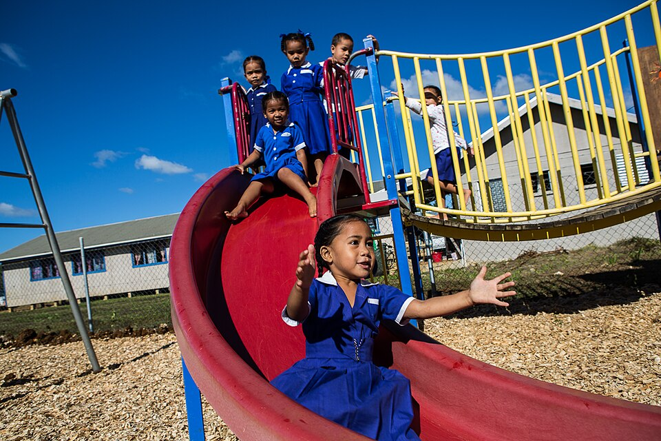
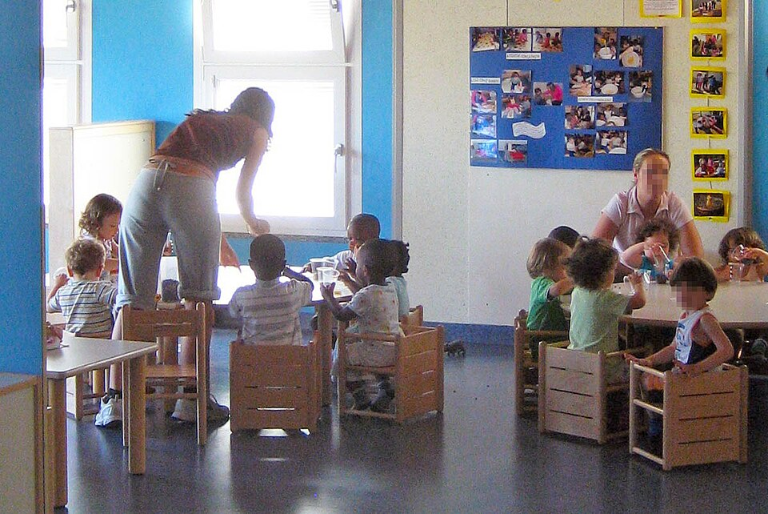
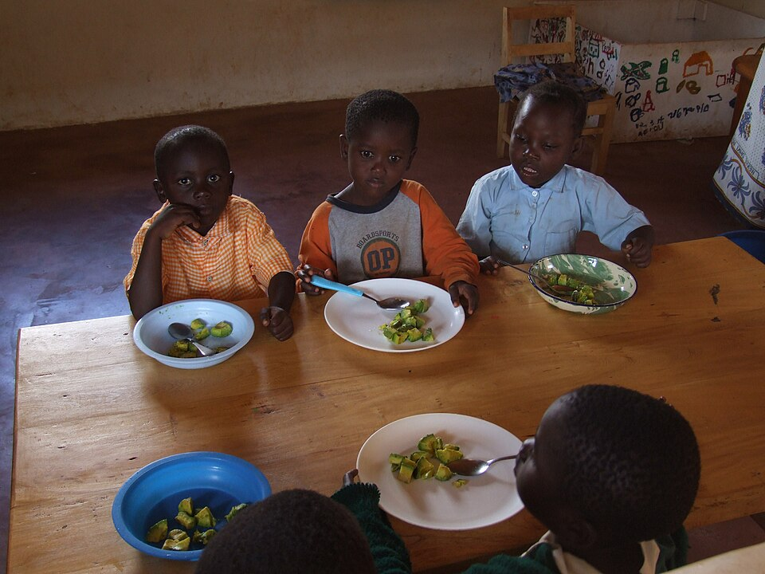
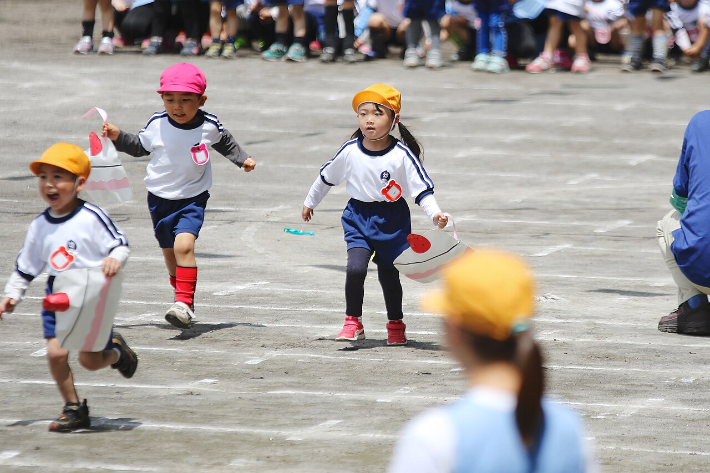
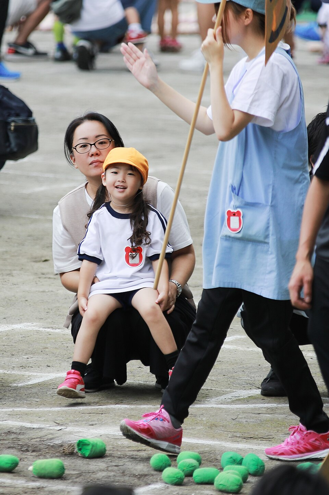
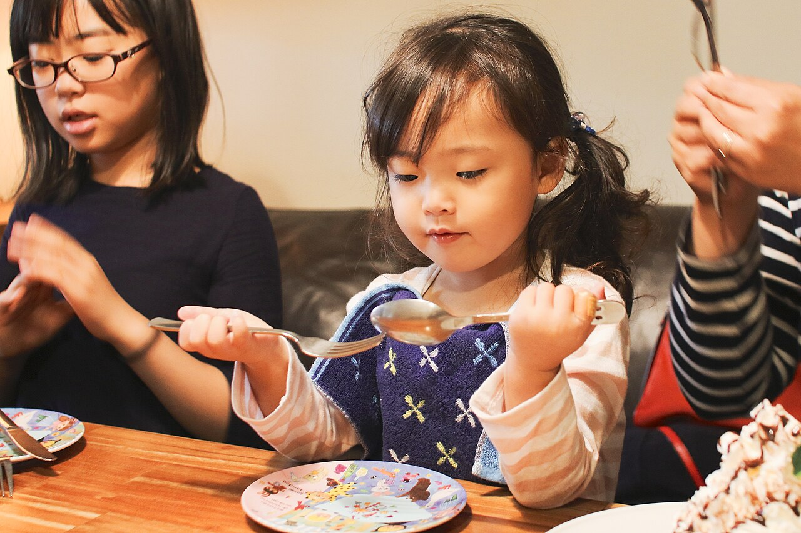

つつじが丘保育園
写真：日本の幼稚園の制服の女の子（2007年）。
この園の子ではありません。背景を消して切り抜き。
Big Ben（Gaijin Biker）／Wikimedia Commons／CC BY-SA 2.0

Department of Foreign Affairs and Trade／Wikimedia Commons／CC BY 4.0
1日の流れ
朝7時に門を開け、夜7時に閉めます。0〜2歳と3〜5歳で、給食とお昼寝の時間が違います。
- 7:00開所。順に登園、連絡帳を受け取ります開所。順に登園
- 9:00朝のおやつ（牛乳・ふかし芋など）朝のあつまり（歌と、きょうの予定）
- 10:00園庭あそび・散歩カートでつつじ公園へ散歩・外あそび・制作
- 10:450・1歳の給食（0歳は離乳食）外あそびの続き
- 11:302歳の給食給食
- 12:30お昼寝（〜15:00）お昼寝（〜14:30。ぞう組は1月から短く）
- 15:00おやつ（調理室で手作り）おやつ。15:30から好きな遊び
- 16:00順に降園順に降園
- 18:00延長保育（補食のおにぎり）延長保育（補食のおにぎり）
- 19:00閉所閉所
月〜土 7:00〜19:00（標準時間 7:00〜18:00、短時間 8:30〜16:30）。休園は日曜・祝日・12月29日〜1月3日。
6つのクラス、
あわせて60人
クラスは4月1日の年で分けます。下の「2027年4月の募集」は、みずほ台市が11月に出した予定の数です。

Vincenzo Mainardi／Wikimedia Commons／CC BY-SA 3.0
ひよこ組
- 定員
- 6人・保育士2人と看護師
- 入園できる時期
- 生後57日から
りす組
- 定員
- 10人・保育士2人
- 部屋
- 1階、ひよこ組のとなり
うさぎ組
- 定員
- 10人・保育士2人
- おむつ
- 夏ごろからパンツに
こぐま組
- 定員
- 11人・保育士2人
- 部屋
- 2階（上履きを使います）
きりん組
- 定員
- 11人・保育士1人
- 当番
- 給食の配膳を手伝います
ぞう組
- 定員
- 12人・保育士1人
- 3月
- 卒園式（3月20日ごろ）
募集の無いクラスも、4月より後に空きが出たときは市が毎月1日に知らせます（申し込みは同じく市役所）。

Nicor／Wikimedia Commons／CC BY-SA 3.0
給食は、園の調理室で
栄養士1人と調理員2人が、毎朝その日の分を作ります。ごはんも園で炊きます（主食を持ってくる日はありません）。
- 0歳
- 離乳食は、家で食べたことのある物から。月に1回、栄養士と面談します
- アレルギー
- 医師の指示書をもとに、除去食を作ります（卵・乳・小麦など）
- 給食費
- 3〜5歳は月4,800円（主食・おやつ込み）。0〜2歳は保育料に入っています
外あそびの帽子は、園で用意します。
名前を書くところは白い布です。

MIKI Yoshihito／Wikimedia Commons／CC BY 2.0
持ち物
4月の入園の日に持ってくる物です。全部に名前を書いてください（おむつは1枚ずつ）。
見学の日を選ぶ
平日の10時（外あそびの時間）と15時半（おやつのあと・お迎えの時間）の2回、45分です。1回3組まで。
2027年4月1日に、お子さんは何歳ですか？
選ぶと、見学の時間にそのクラスが何をしているかが出ます。

MIKI Yoshihito／Wikimedia Commons／CC BY 2.0
数字は残りの組数（1回3組まで）。あと1組は桃色の字、満の回は線で消しています。受付は見学の前日17時まで。
来る人
1組おとな2人まで。お子さんも一緒に来てかまいません。上履きは要りません（スリッパがあります）。
取り消し
前の日の17時までに電話で。当日の朝、園で熱やおなかのかぜがはやっているときは、園から電話して日を替えてもらうことがあります。
見学のときに
写真は撮らないでください。保育料や入れるかどうかは市が決めるので、園では答えられません（下の「申し込みの手順」）。

MIKI Yoshihito／Wikimedia Commons／CC BY 2.0
申し込むのは、園ではなく
市役所です
認可保育園なので、だれが入れるかは、みずほ台市が家の事情（働く時間など）を点数にして決めます。4月入園の一次の受付は12月11日（金）までです。
- 11月16日（月）〜
見学と、書類をそろえる
申込書（「教育・保育給付認定申請書 兼 利用申込書」）は、市役所・各園・市のサイトにあります。働いている人は、勤め先に就労証明書を書いてもらいます。
- 12月11日（金）まで
市役所に出す
希望の園を5つまで書けます。窓口・郵送（12月11日の消印まで）・市の電子申請のどれでも。
みずほ台市役所 2階 こども未来課 保育係（平日 8:30〜17:15）
- 2月10日（水）ごろ
結果が届く
市から郵便で届きます。入れなかったときは、二次の受付（2月下旬）に回ります。
- 3月上旬
園で面談と健康診断
お子さんと一緒に、1時間ほど。アレルギーの指示書、持ち物の名前の書き方も、このときに。
- 4月1日（木）
入園。はじめは短い時間から
慣らし保育は1〜2週間。初日は2時間、給食の日、お昼寝の日、と少しずつ長くします。
国の無償化の対象。給食費（月4,800円）だけ園に払います。
保育料は世帯の住民税で決まり、市の表に載っています。園では計算しません。
18:00〜19:00。月ぎめは2,000円。補食におにぎりが出ます。
行き方
つつじが丘駅の北口から歩いて8分。桃色のつつじの生け垣が目じるしです（花は4月下旬〜5月）。
- 住所
- みずほ台市つつじが丘2丁目14-3
- 電車
- みずほ台線「つつじが丘」駅 北口から徒歩8分
- バス
- 市バス「つつじが丘二丁目」下車、徒歩1分
- 自転車
- 門の内側に12台。子ども乗せの自転車も置けます
- 車
- 駐車場はありません。送り迎えは歩きか自転車で
- 電話
- 000-000-0000（架空。見学の取り消しも）